Categorizing available services in user portals
1. Problem statement
In user portals, all available services are presented in a single list, which is inconvenient for users of registries with a large number of such services.
To improve user experience, the ability to categorize services using groups and the ability to manage their display order has been implemented. This allows for more efficient display and easier access to the necessary services in registries.
2. General principles and provisions
The regulations developer can group and sort business processes through the web interface of the administrative portal. Changes to grouping and sorting settings are validated during the publication of the registry regulations and deployed in the corresponding environment.
Subsequently, users of the Officer and Citizen portals will be able to view the list of business processes divided into groups and ordered according to the regulation settings.
|
A business process cannot be assigned to two or more groups simultaneously. The group is not mandatory, and if a business process is not assigned to a group, it is displayed outside of any group. If there are no group settings, it means that no business process is assigned to a group. Groups that do not have any business processes available to the user are not displayed in user portals but are shown in the Regulations administrator portal’s interface. Nesting of groups is not supported. |
3. Configuring business process groups in the Regulations administrator portal
| You can group business processes, sort groups, and manage accessible services for display in the portals. Users will only see the services they have access to. A group will not be displayed if all its processes are inaccessible to the user. |
To configure the categorization of business processes using groups, follow these steps:
-
Access the Regulations administrator portal in your registry.
-
Open or create a new candidate version for merging changes.
-
Go to the Process models section and navigate to the Display in portals tab.
-
Customize the settings according to your needs. The regulations administrator can:
3.1. Operations with process groups
The regulations administrator can create, rename, and delete process groups.
| All creation and editing operations can only be performed within a change candidate version of the regulations. The master version only allows viewing mode (see more at Managing registry regulations versions) |
3.1.1. Creating a business process group
- To create a group for consolidating business processes, follow these steps:
-
-
Open the Display in portals tab and click on Create group.
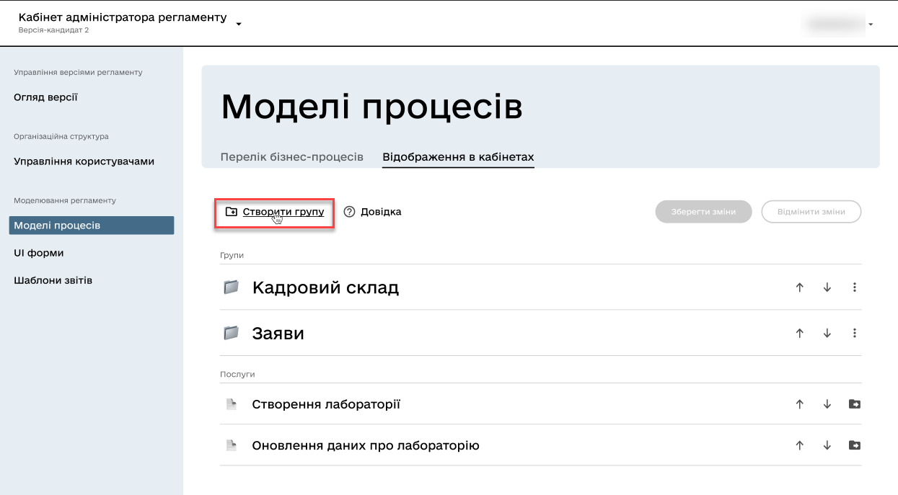 -
Enter a unique name for the new group within the regulations.
The name can have 3 to 512 characters. Allowed characters include "A-Z," "a-z" of the Ukrainian alphabet, space, apostrophe, hyphen, parentheses, "/", ":", ";", ",", ".", "№," and numbers 0-9. 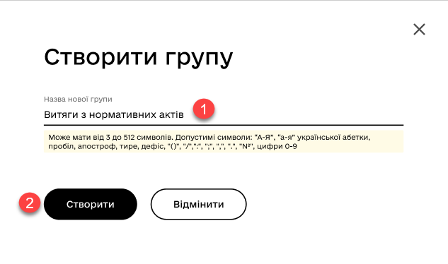-
If the data input format is violated, you will receive the following validation error:
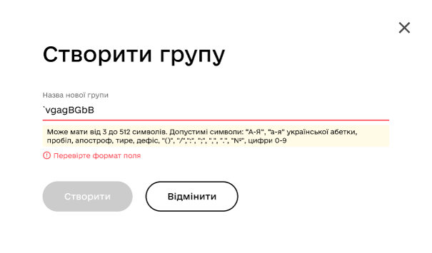
-
If a group with the same name already exists, you will receive the following validation error:
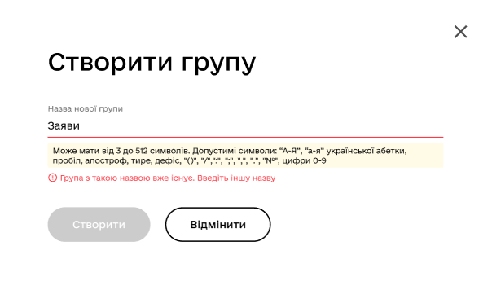
-
-
Click Save changes.
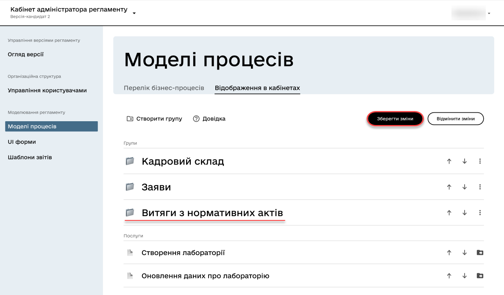
-
3.1.2. Renaming a business process group
- To rename a group, follow these steps:
-
-
Open the Display in portals tab.
-
Next to the corresponding group or inside the group, select the "ellipsis" menu (⋮) and click on Rename.
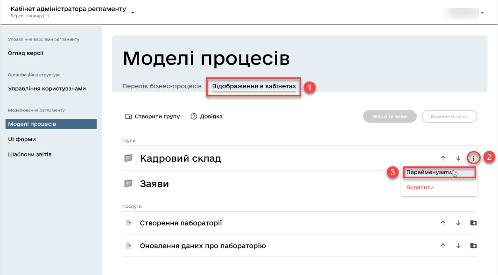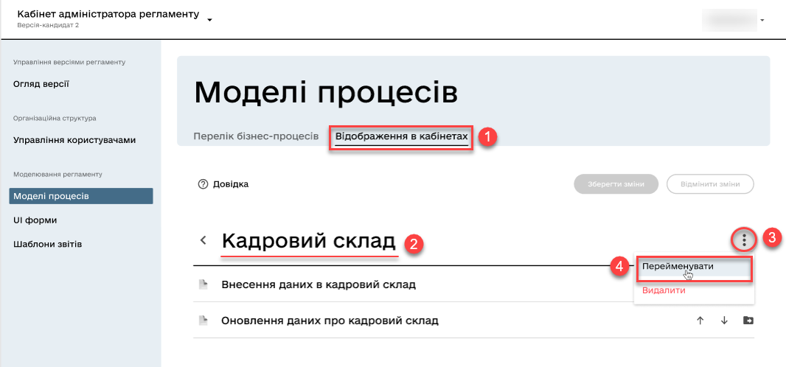 -
In the new window, enter the desired name.
The name can have 3 to 512 characters. Allowed characters include "A-Z," "a-z" of the Ukrainian alphabet, space, apostrophe, hyphen, parentheses, "/", ":", ";", ",", ".", "№," and numbers 0-9. 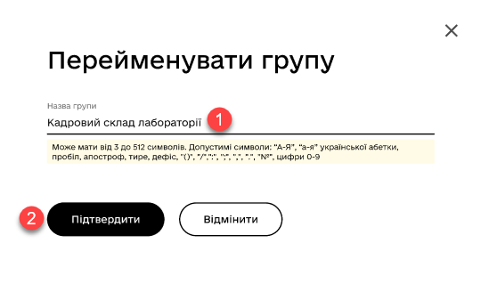 -
Click Save changes.
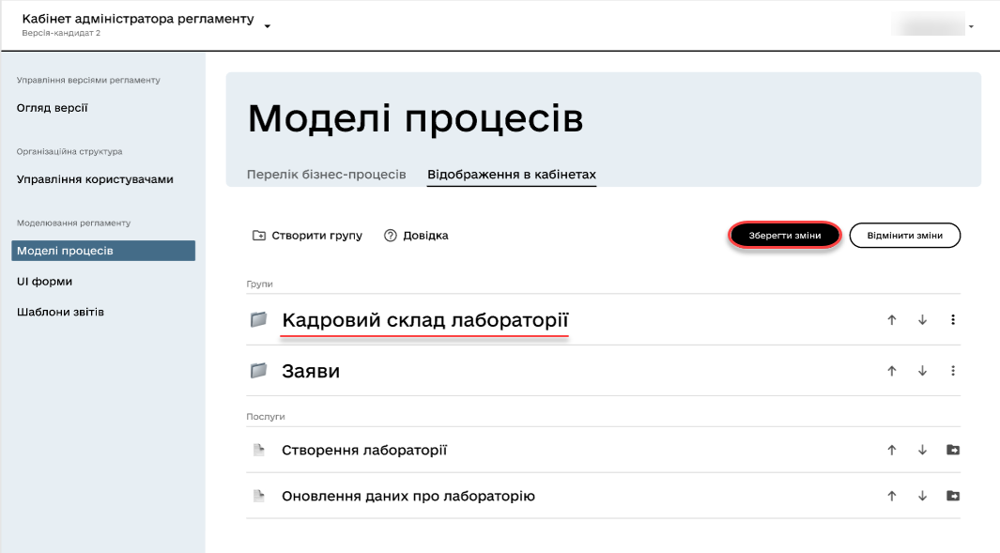
-
3.1.3. Deleting a business process group
| Note that when deleting a group, the business processes are not deleted but become ungrouped. |
- To delete a group, follow these steps:
-
-
Open the Display in portals tab.
-
Next to the corresponding group or inside the group, select the "ellipsis" menu (⋮) and click on Delete.
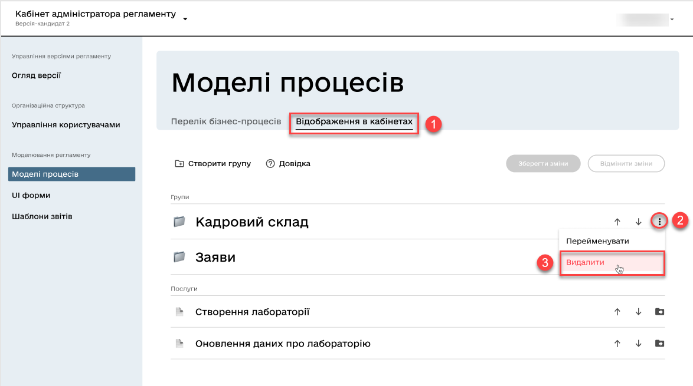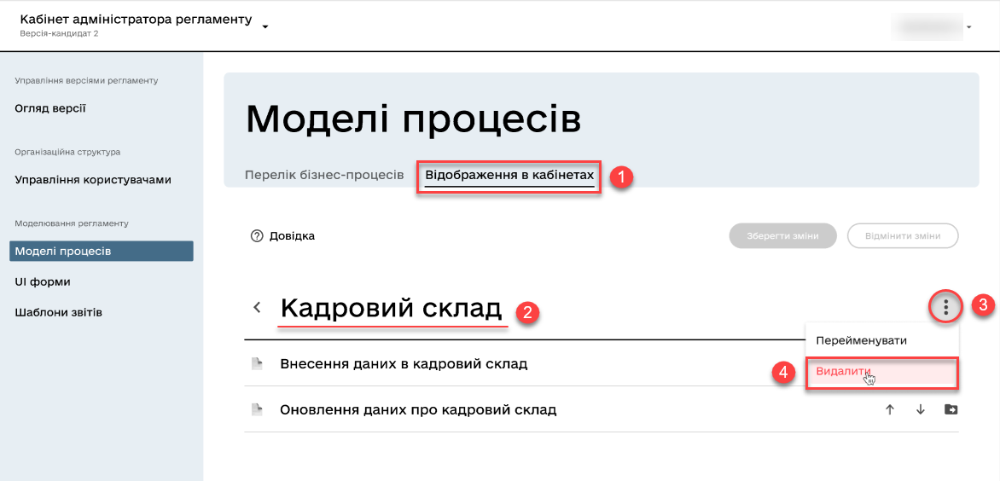 -
In the new window, confirm or cancel the action.
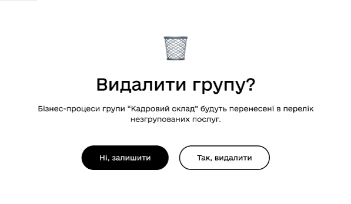 -
Click Save changes.
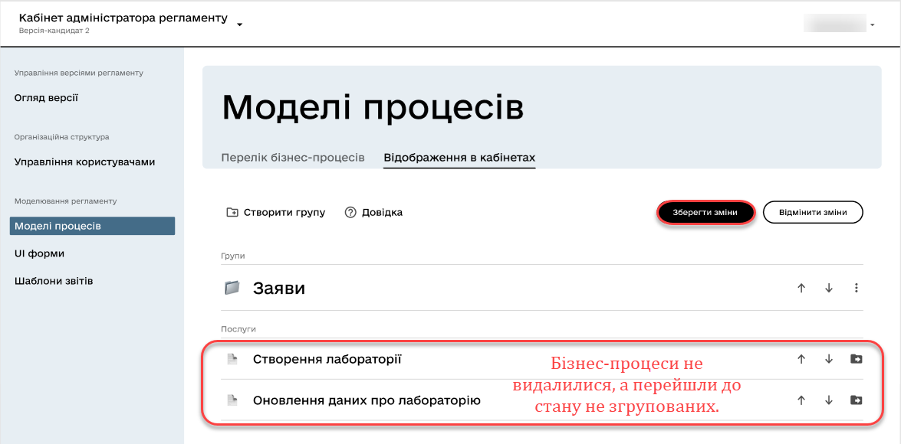
-
3.1.4. Sorting business process groups
Using the vertical arrows on the interface to move business process groups allows users to conveniently and quickly find and select the desired processes from the list.
For example, if the interface has a list of groups such as "Personnel," "Requests," "Assets," etc., using the vertical arrows allows sorting these groups based on different logical criteria to provide users with convenient access to the necessary information.
| When creating a group through the Regulations administrator portal, it is placed at the bottom of the group list. Later on, it can be moved wherever necessary. |
Additionally, sorting business process groups can help ensure consistency and logical structure in the interface, facilitating user navigation and improving their interaction experience with the system.
3.2. Operations with processes
3.2.1. Adding business processes to a group
- To add a business process to a group, follow these steps:
-
-
Open the Display in portals tab.
-
Create a group (see Creating a business process group).
-
Next to the respective business process, click on the folder icon (📁)
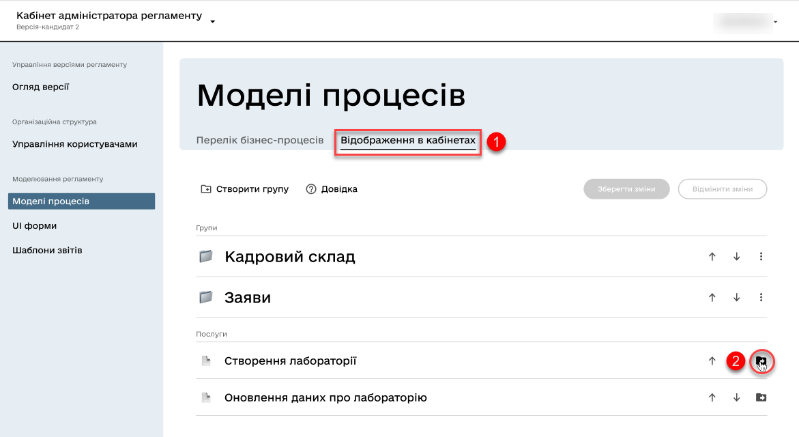 -
In the new window, select the desired group to which you want to transfer the business process.
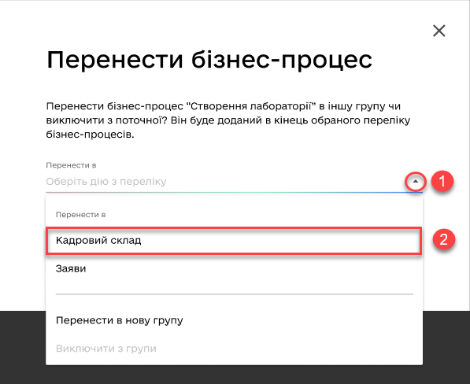You can move the business process to another group or exclude it from the current one. It will be added to the end of the selected list of business processes. -
Click Confirm.
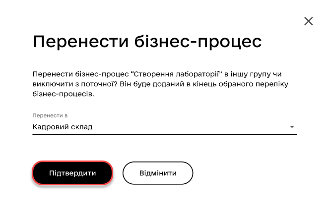 -
Save changes.
-
3.2.2. Removing a business process from a group
- To remove a business process from a group, follow these steps:
-
-
Open the Display in portals tab.
-
Open the existing group with processes.
-
Next to the respective business process, click on the folder icon (📁)
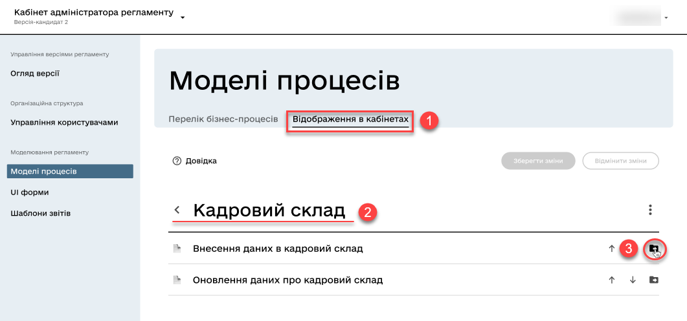 -
In the new window, select
Exclude from the groupto remove the business process from the group.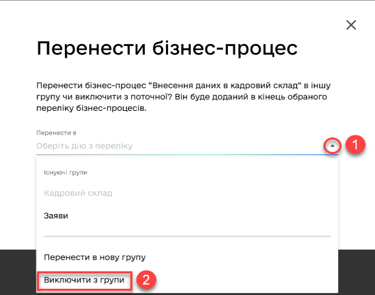You can also move the business process to another group. It will be added to the end of the selected list of business processes. -
Click Confirm.
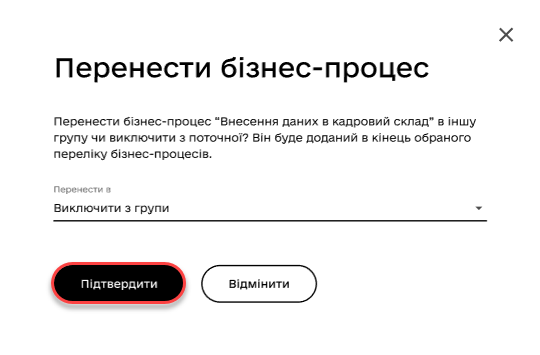 -
Save changes.
-
3.2.3. Sorting business processes within a group
Implementing the ability to sort business processes in the interface allows users to easily and quickly find and select the required services. Vertical arrows can be used to move processes within groups or outside of them.
4. Modeling the registry regulations
The configuration of categorization (grouping) of business processes in user portals is located in the bp-grouping.yaml configuration file within the regulations of your registry.
| If such a file is absent, create and fill it accordingly (see the example below). |
- There are two ways to configure service grouping in user portals:
-
-
In the Regulations administrator portal interface — in this case, after making changes to the master version of the regulations, the settings will automatically be applied to the bp-grouping.yaml file in the Gerrit repository.
-
In the structure of the regulations in the Gerrit repository manually — in this case, after deploying the regulations through the publication pipeline, the changes will become available in the interfaces of the Regulations administrator portal.
By default, the bp-grouping.yaml grouping settings are empty. Figure 1. Registry regulations structureExample 1. Registry configuration example: bp-grouping/bp-grouping.yamlgroups: - name: Перша група processDefinitions: - bp-1-process_definition_id - bp-2-process_definition_id - name: Друга група processDefinitions: - bp-3-process_definition_id - name: Третя група ungrouped: - bp-4-process_definition_id - bp-5-process_definition_id-
The
groupsarray contains groups of business processes. -
The
ungroupedarray contains ungrouped business processes.
The business processes listed in the processDefinitionsandungroupedarrays must exist in the registry’s regulations, in the bpmn directory. -
-
| When a business process is deleted, it is automatically removed from the bp-grouping.yaml file. |
5. User portal interfaces
After deploying the regulations and applying the settings, groups of business processes will be displayed in the user portals for the Officers and Citizens.